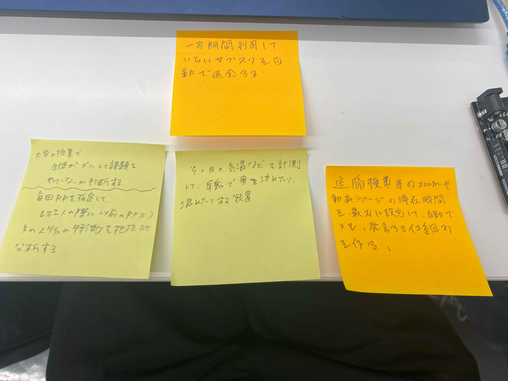

IOTとは
直訳すると物のインターネットといい、遠隔で操作できたりするもののことを言う。
たとえを出すならオートロックキーやエアコンがこれに当てはまる。
aruduinoで遠くの友人に遠隔で操作してもらった「動画」
URL
グループで出たIOTでできるもの

グループでIOTを使ったものについて考えてみました。
IOTでどんなことができるか考えてみた
グループワークで私が考えたものですが生徒が不正して課題などを行っていないかを確認するものを思い浮かべました。
やり方として毎回の授業にRPを指定してそれらから生徒の文の書き方や執筆の癖などを読み取り以前と違いがないかを確認できるというものです。